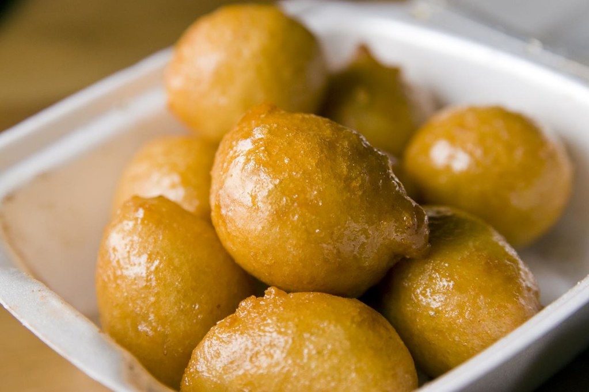

Loukoumades

Description
Loukoumades are little bite-sized fluffy sweet honey balls (the Greek version of donuts), which are deep fried to golden and crispy perfection.
Loukoumades are traditionally served soaked in hot honey syrup, sprinkled with cinnamon and garnished with chopped walnuts or toasted sesame seeds.
Ingredients
- 1 cup of lukewarm water
- 1 cup of lukewarm milk
- 15 grams active dry yeast
- 3 and 1/4 cup of flour
- 2 tbsps sugar
- 1 tsp salt
- 4 tbsps olive oil
- 3/4 cup honey
- powdered cinnamon
- chopped walnuts
- vegetable oil for frying
Steps
- To prepare this traditional loukoumades recipe, start by making the dough. In a bowl add the water, sugar and yeast.
Stir with a whisk until the yeast dissolves completely and wait for 5 minutes.
In a mixers bowl add the yeast mixture add the rest of the ingredients for the dough and whisk at high speed (for about 2 minutes)
until the mixture becomes a smooth batter. (You could also use a hand whisk. Whisk until the mixture has no lumps).
- Cover the bowl with some plastic wrap and let the dough rest in a warm place for at least 1 hour to rise.
- Into a medium sized frying pan pour enough vegetable oil to deep fry the loukoumades. Heat the oil on a medium heat until hot.
Test if the oil is hot enough by dipping in some of the dough for the loukoumades. If it sizzles the oil is ready.
A more accurate way is to use a kitchen thermometer and measure the oil to be at 160C / 320F.
- Dip a tablespoon in some oil, shake it a bit to remove any excess. It is best to dip the spoon in oil and not water.
Dip your hand in the dough and using your palm, squeeze out a small portion of dough between your thumb and index finger, like you are making a fist.
Using the spoon, grab the dough ball off your hand and let it drop in the hot oil.
Repeat this procedure until the surface off the pan is comfortably filled.
You should dip the spoon in the oil & shake off every time, so that the batter doesn't stick on it.
- While the loukoumades are fried, use a slotted spoon to push them into the oil and turn them on all sides, until golden brown.
Place the loukoumades on some kitchen paper to drain. Repeat with the rest of the dough.
- When done, place the loukoumades on kitchen paper to remove the excess oil. Then serve on a large platter,
drizzle with the honey and sprinkle with cinnamon and chopped walnuts.
Home